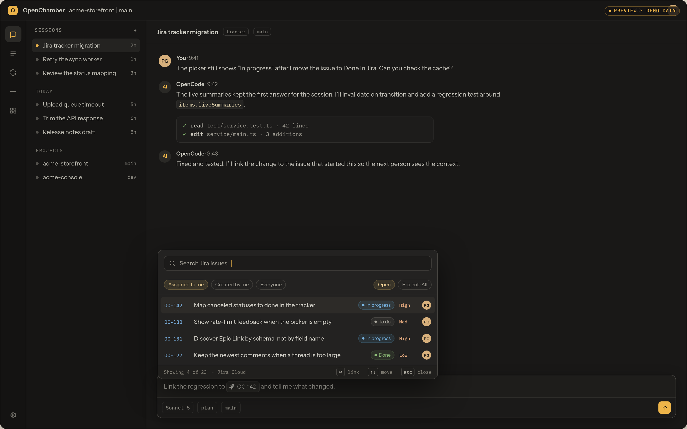
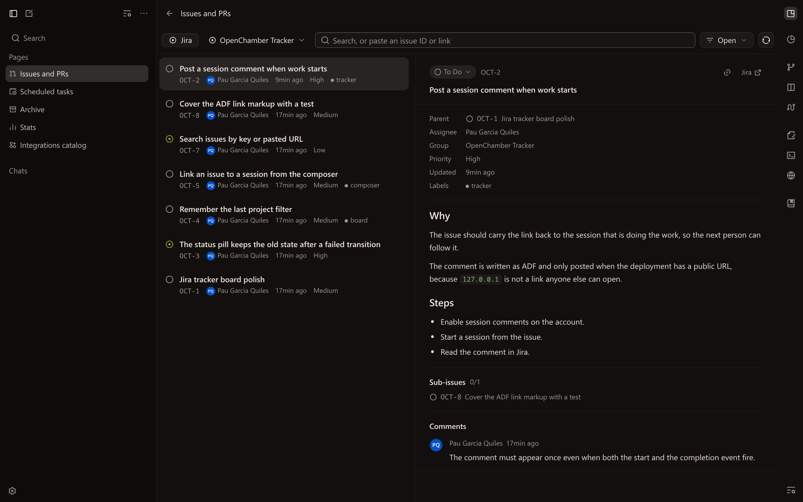
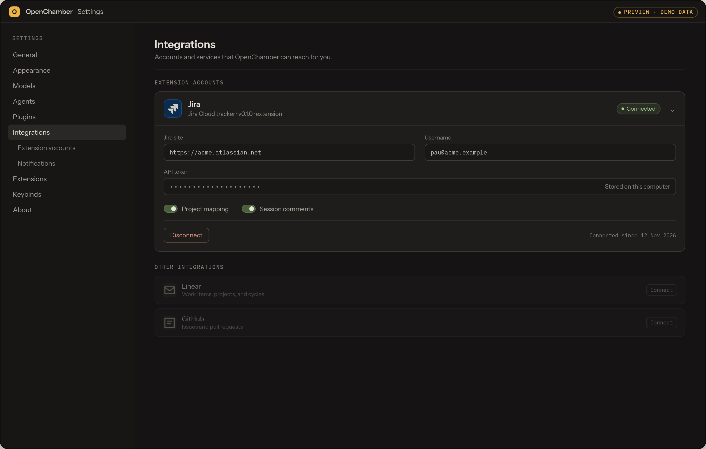

The issue beside the work
Link issues from the composer and keep them with the session. Live summaries show the current Jira state, so the board and the chat stop disagreeing.
Find the issue from the composer, keep it beside the session, move its state, and leave a comment with the context. One Jira tracker, wherever OpenChamber expects a tracker.

OpenChamber draws the tracker UI itself. The extension has no separate rail panel: the issue list is the Jira tab on the issues board, the picker is a composer action, and Settings only holds the connection and mapping.
Press Ctrl/Cmd+K, then B, or use the Command Palette → Show or hide issues and PRs. Choose Jira in the source menu. The board remembers your choice.
issue list · Jira tabClick + (Add attachment) at the bottom-left of the composer and choose Link Jira Issue. The @ menu is for file mentions; it does not list Jira.
picker · search, filter, linkSelect an issue on the board, or open a Jira issue URL. Description, comments (read-only), children, and the state menu open in the Tracker panel beside the chat.
read · move · linkSettings → Integrations → Extension accounts → Jira is only the connection, project mapping, and the session-comment switch. If you connected the account and looked there for a list, that is why nothing appeared.
Two limits come from OpenChamber, not this extension: the issue detail has no comment composer for tracker items, and the board's project picker has no scrollbar with very long project lists. Both are tracked upstream.
The extension plugs into OpenChamber's tracker contract. Jira issues turn up on the board's Jira tab, in the composer picker, in linked sessions, in live states, and in the account card — with Jira remaining the source of truth.
Link issues from the composer and keep them with the session. Live summaries show the current Jira state, so the board and the chat stop disagreeing.
Search by key or summary, filter to what is assigned to you, created by you, or anyone you can see, and scope to a project. The filters become JQL; you never write it.
Transitions come from the issue's own workflow. The extension picks the transition whose destination matches the state you chose, and reports Jira's refusal when there isn't one.
Post the session comment as real Atlassian Document Format, with the session link kept as a link. The next person can see why the code moved, not just that it did.
Description, assignee, priority, parent, subtasks, epic children, and comments — converted to readable Markdown, newest comments kept when a thread is too large.
The token acts as you. Reads are GETs; writes are only a state change and a comment. Issues you cannot see in Jira never appear in OpenChamber.
The board's Jira tab, the composer picker, the issue panel, and the account card are the whole loop: find it, read it, move it, leave the context. The screenshots below are layouts rendered from demo data against OpenChamber 2.8.0.


Previews use demo data, not a live Jira site. Replacing them with real captures is tracked in issue #12.
No daemon to run, no sync job to babysit, no second database. The extension is a local service that translates OpenChamber's tracker calls into Jira REST calls.
Add the folder or ZIP in Settings → Extensions. Allow the local tracker service and the Jira connection.
one extensionPaste your site, Atlassian email, and an API token. The extension checks serverInfo and myself before it says connected.
Open the composer's + menu and choose Link Jira Issue. It stays with the session and shows its live state. The board's Jira tab lists the same issues.
composer picker · board tabChange state or write the session comment from OpenChamber. Jira stays the source of truth; the writes are explicit.
writes are explicitOpenChamber stores the token and adds the Authorization header in its outbound proxy. The extension service never sees it. Requests are pinned to the Jira site you entered, and the service reaches Jira only through that proxy. Reads use GET; the only writes are the state change and the session comment you ask for.
The extension uses HTTP Basic auth: your Atlassian account email and an API token. Atlassian designed tokens to authenticate even when an organization enforces SAML single sign-on or two-step verification.
Your organization still decides whether personal API tokens are allowed — and for how long. That is what to check before a rollout.
Atlassian Guard authentication policies can block members from creating or using user API tokens, cap their lifetime, and revoke them. When that happens, Jira answers 401 or 403 and the extension cannot override it. Use an organization-approved service account, request an exception, or wait for OAuth 2.0 3LO.
Atlassian's current guidance discourages integrations that collect and store personal API tokens. OAuth is the durable replacement, but Jira's 3LO tokens go to api.atlassian.com/ex/jira/{cloudId}, not the site origin — so it needs an upstream change first.
read:jira-work, write:jira-work, and read:jira-user. Classic tokens work too.serverInfo and refuses anything else.| Action in OpenChamber | Jira permission |
|---|---|
| Find issues, read details, projects, and statuses | Browse projects |
| Change an issue's state | Transition issues |
| Post a session comment | Add comments |
These are deliberate limits, not surprises. Each one has a reason, and where work remains it links to the issue that tracks it. The documentation says the same thing the code does.
Jira Server and Data Center answer serverInfo with a different deployment type and are refused.
It cannot create, edit, or delete issues. That needs the tracker contract to grow first (#2).
A workflow step that demands resolution or custom fields cannot be completed here. Jira's error names the missing fields, and the issue header opens Jira to finish the step.
HTTP 429 is surfaced with Jira's message, not retried silently. Retry-After handling is planned (#4).
Images and attachments are left out of the Markdown description; panels and expandos lose some structure (#5).
One Jira site per OpenChamber today. Multiple accounts are planned (#9).
Up to 100 comments are read; if the newest still exceed the response budget, the oldest are dropped.
No saved filters or raw JQL. The fixed filters are safer and cheaper (#8).
Every enhancement is a GitHub issue with context, acceptance criteria, and the blocker that decides the order. Nothing here is a promise with a date; it is a queue you can read.
api.atlassian.com/ex/jira/{cloudId}.
upstreamsecurity
main.
ci
Download the ZIP and add it in Settings → Extensions, or add the repository folder from a checkout. Then connect a Jira Cloud site and link your first issue.
Requires OpenChamber 2.8.0 or newer · Jira Cloud · MIT licensed
# build the runtime bundle and archive
npm install
npm run verify
npm run zip
# then: Settings → Extensions
# add the folder or openchamber-jira.zip